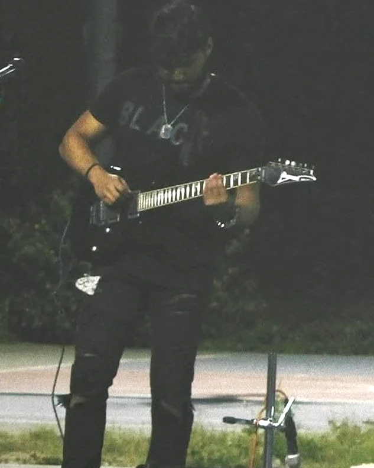
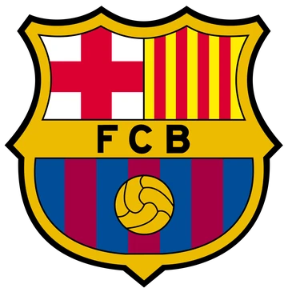
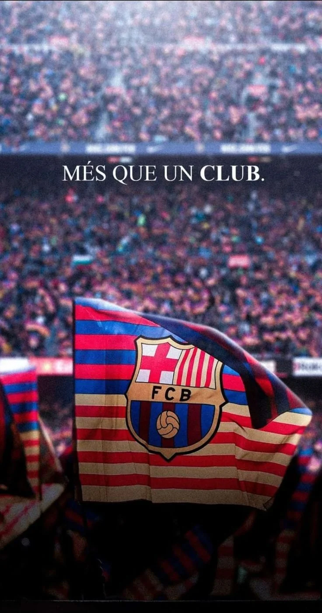
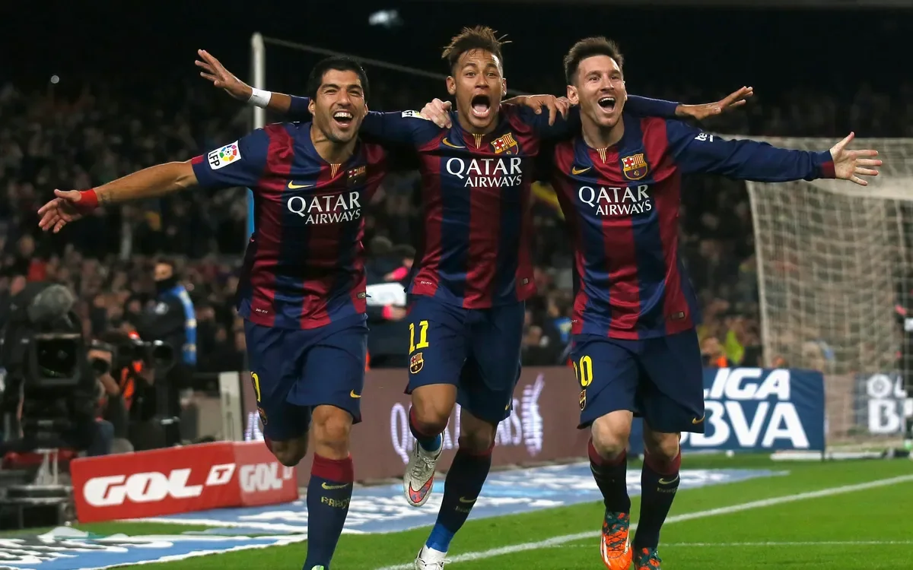
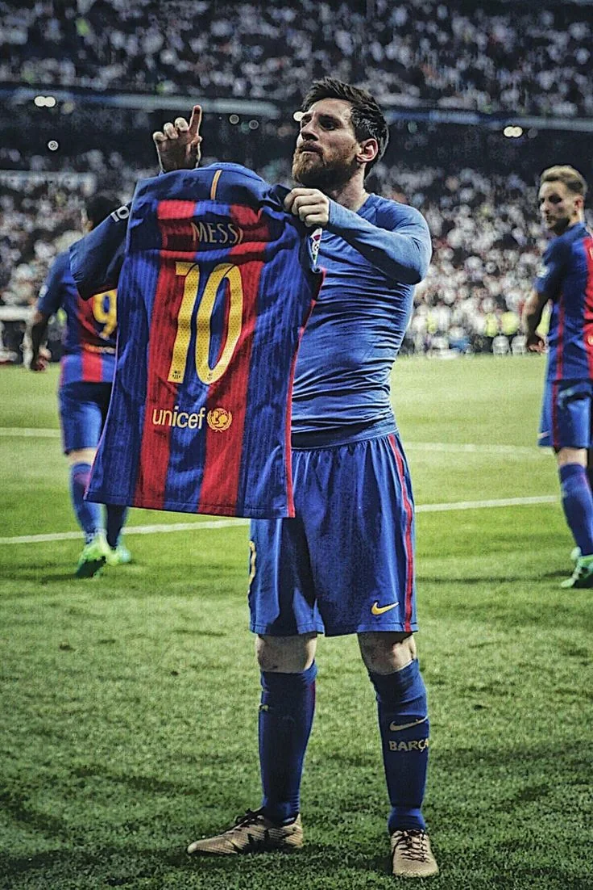

04 · Hobbies
Beyond research.
Apart from academics, I am most passionate about two things: music and football.
Pick a band to hear a track
Side A · Music
Music.
Electric guitar, heavy riffs and odd time signatures.
I spend a good portion of my free time playing electric guitar, particularly progressive metal and metalcore, and listening to a wide range of heavy music. I am always happy to jam with fellow musicians, so feel free to reach out! My playlists usually feature artists such as Opeth, Ne Obliviscaris, Dance Gavin Dance, Lamb of God, ERRA, All That Remains, etc.


Side B · Football
Football.
Blaugrana at heart.
I am a huge FC Barcelona fan and try my best to watch all of their games on TV. Lionel Messi is my idol. I also love to play pickup soccer whenever time permits. If you need a strong CDM to control the tempo of the game, I got you :)
Visca el Barça
I don’t care where you’re from. But if you tell me you love football and don’t love Barcelona, you have a problem.


